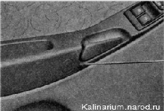

Обивка передней двери снятие и установка
При снятии обивки двери высока вероятность поломки ее пластмассовых держателей, поэтому перед началом работы запаситесь достаточным количеством новых держателей (8 шт.)
Снятие
1. Подготавливаем автомобиль к выполнению работы
2. Снимаем внутреннюю облицовку наружного зеркала заднего вида.
3. Выворачиваем кнопку блокировки замка двери.
4. Поддев шилом (или шлицевой отверткой с узким тонким лезвием) заглушку, снимаем ее.
5. Крестовой отверткой отворачиваем винт крепления подлокотника.
6. Потянув за внутреннюю ручку замка, крестовой отверткой отворачиваем винт и снимаем ручку.

7. Крестовой отверткой отворачиваем винт крепления подлокотника (расположен в нише)...
...и два самореза крепления кармана для мелких вещей.
8. Шлицевой отверткой, введя ее между обивкой и дверью, поочередно извлекаем восемь держателей обивки из отверстий двери и отводим обивку от двери...
...(расположение держателей показано на снятой обивке).
9. Отсоединяем две колодки жгутов проводов от блока переключателей стеклоподъемников.
10. Снимаем обивку.
11. При необходимости крестовой отверткой отворачиваем четыре винта крепления энергопоглощающей вставки и снимаем ее.
Установка
Устанавливаем обивку в обратной последовательности, заменив поврежденные держатели новыми.